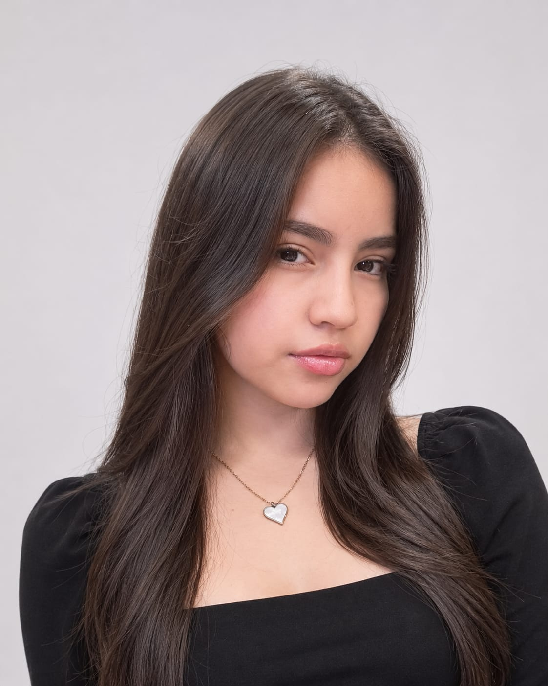

My name is Alejandra Raquel Aviles Esperanza, and I am a dedicated, responsible, and perseverant student who is always willing to learn and grow. I come from a loving family that has taught me the importance of respect, honesty, and kindness.
I am currently in my final year at Centro ¡Supérate! ADOC, where I have strengthened my academic, personal, and technological skills. This experience has helped me become more confident, independent, and prepared for new challenges.
As I prepare for the next stage of my education, I aspire to study Marketing at Universidad Francisco. My long-term goal is to become a successful businesswoman, develop my own business projects, and make a positive impact.